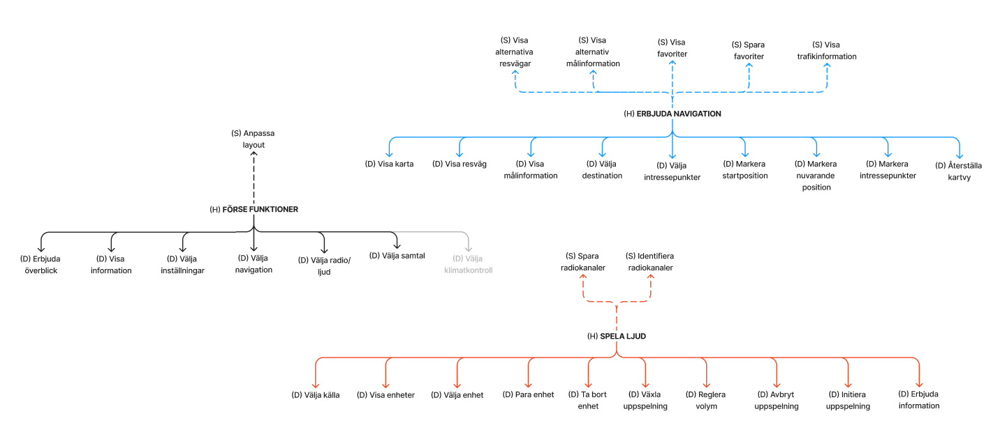
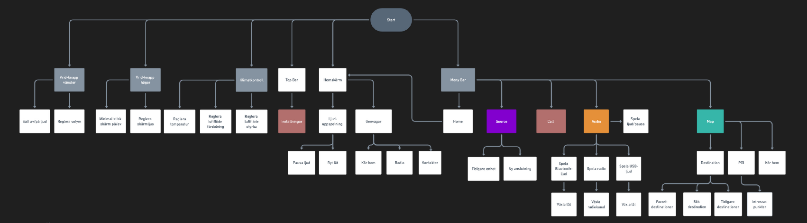
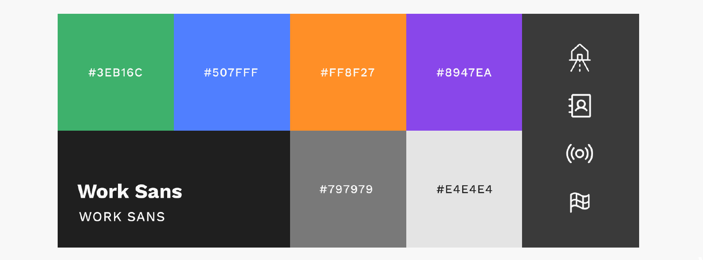
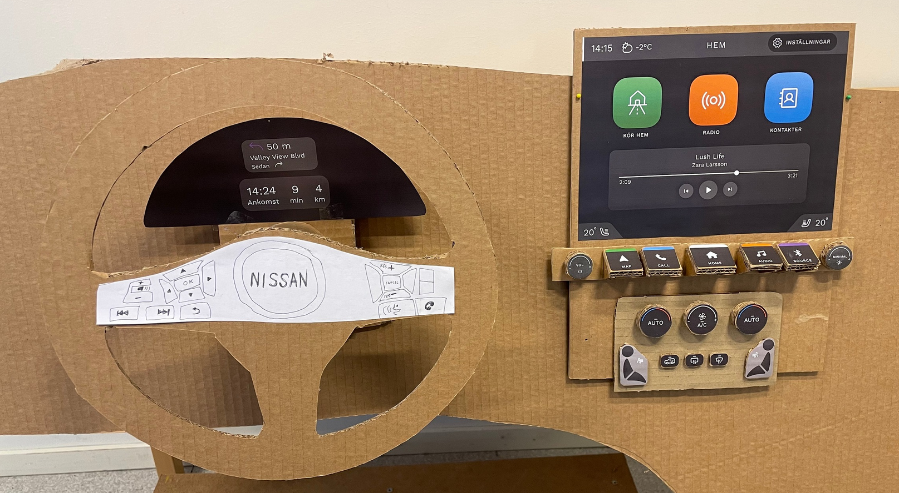
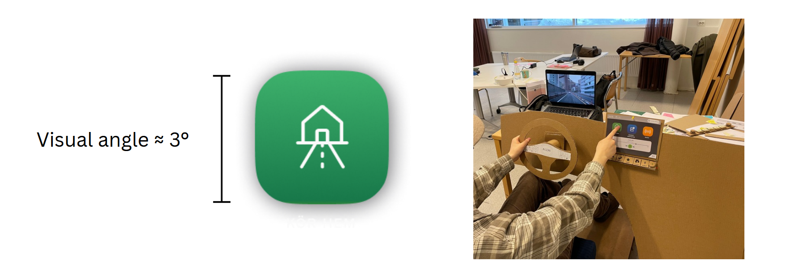
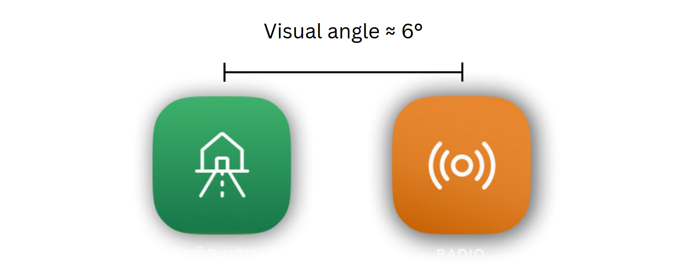

Infotainment User-Interface Design¶
This project was a collaborative assignment for the course ‘Cognitive Design’ at the Umeå Institute of Design (UID). The project was called ‘Me and my car’ and the goal was to design an infotainment system for a car that integrates cognitive ergonomic principles and research to make the use of the interface as safe as possible.
The Assignment¶
An infotainment system is a system that combines information and entertainment. In a car it is mostly located in the center stack and often offers navigation, radio, telephone, climate control, and more. For this project, we were given four areas of focus: two obligatory and two voluntary. The areas were:
A start screen with a main menu and a radio/music interface (obligatory)
A navigation interface (obligatory)
Telephone interface (voluntary)
Climate control (voluntary)
My team chose to focus on 1, 2, and 4.

The different teams were also allocated a different car. My team was supposed to design an interface for the Nissan Juke (which you can see in the above image).
Initial Research¶
In this project we followed the double diamond model of the design process, popularized in 2005 by the British Design Council.

As you can see in the above image of the model, we begin at the research process to create a wide understanding of the challenge, the context, and the user. Therefore, our process started with an interview and a user test of the Nissan Juke at a car vendor with a salesperson. This let us get insight into how the car’s current infotainment system worked, what the salesperson sees as the selling points of the car, as well as the car’s market.
Three User Tests¶
Two main insights were identified in the first user test with the car salesperson. First, the salesperson noted the usability of the car’s interface, still employing physical buttons and a relatively simple touch-based interface. Second, according to the salesperson, people mostly have the Nissan Juke as a secondary vehicle, where simplicity and accessibility is usually considered more important than with main vehicles. It should be easy to go into the car and use the interface, preferably without taking one’s gloves off during winter.
After the interview and user test with the salesperson at the car vendor, the team conducted two user tests in other cars with other participants to get insights into what works and does not work for other infotainment systems.
The second user test was conducted in a Peugeot 3008 (2019). During this test, the user remarked upon their preference for physical buttons, which mirrors what the car salesperson said about the Nissan Juke. The user noted the particular usefulness of physical buttons for switching between the navigation interface, the radio/music interface, and the climate control interface (which in this car is within the infotainment system, as opposed to the Nissan Juke where it is located below the infotainment system in the center stack). This was because the buttons are easily located without taking one’s eyes off the road, since one can utilize their tactile features – something which touch-based displays lack.
The third and final initial user test was conducted in a Volvo V70 (2017). This is an older car without a touch interface, but this user also notes that they like the physical buttons. One thing that they struggle with is connecting their phone to the car.
Functional Analysis and Theoretical Research¶
After the interviews we conducted a functional analysis of the different systems and elucidating the system requirements along with its main and sub functions.
We visualized this in a functional tree which is displayed in the above figure (in Swedish).
At this stage of the design process, I was tasked with gathering academic research on infotainment system design. The research highlighted that square buttons might offer advantages in reducing interaction times (Jung et al., 2021). It also identified varying interaction times across different tasks: radio/music tasks had the shortest interaction times, followed by telephone tasks, while navigation tasks exhibited the longest interaction times (Strayer et al., 2017). Navigation tasks were also found to impose the highest cognitive demand.
Initially, one might think reducing cognitive demand would enhance the allocation of cognitive resources to attention. However, this is not always the case. Excessively reducing cognitive demand could encourage users to engage in non-driving-related activities (such as texting or phone calls) and may also result in a decrease in allocated attentional resources (Oppenheim & Shinar, 2011). This research, and more, was considered when designing our user-interface.
The Design Process¶
After synthesizing our research findings and insights, we entered the ideation phase. This stage involved brainstorming sessions where we explored various concepts for each interface component — start screen, navigation, and climate control. Each team member contributed sketches and ideas based on user feedback and ergonomic principles. These initial concepts were then refined into low-fidelity prototypes to be tested for usability and functionality.
Low-Fidelity Prototype¶
At this stage we split up, sketched on our own ideas for the different interfaces, and then made three different low-fidelity prototypes that each could be tested by users.
Above you can see my own low-fidelity prototype based on my sketches along with the steering wheel. This was placed in front of an old car seat, with a computer screen in front playing a driving POV video to simulate driving.

Above is a picture taken during a user test with one of my teammate’s home menu interface. Based on these user tests conducted on three participants, we started integrating our designs into one single design based on which aspects the users preferred.
Above you can see three wire frames of the integrated design created in Figma: first, the home menu; second, the navigation interface; third, the screen where you choose a destination in the navigation interface. The first wire frame was based on my prototype of the home menu with a integrated media widget from a teammates low-fidelity prototype; the latter two wireframes were created by me and entirely based om my low-fidelity prototypes.
When creating the wireframes, we got an idea of how we wanted our design to look like, what page structure it would have and the user flow, which was visualized as a flow chart (in Swedish) that can be seen above. The point of showing it is mostly to show that it is a somewhat shallow system — that is, the user will not get lost in a jungle of menus within menus. We deemed this to be an important aspect of our system, so that the user does not spend too much time navigating the infotainment system.
High-Fidelity Prototype¶
After the low-fidelity prototype had been created, we started on the high-fidelity, clickable prototype in Figma. Through iterative testing in real car settings, we fine-tuned the interface for optimal usability, addressing user feedback to enhance button visibility, navigation clarity, and tactile feedback on physical controls.
Above you can see some of the screens of the prototype. The homepage in the top left features shortcuts and audio playback at the top left, a radio view adjacent to it, the navigation view at the bottom left, and the destination menu at the bottom right.

There is also a bar of buttons for each main function at the bottom of the screen along with a source button to connect to other sources and a volume knob and screen light knob. The climate control bar is located beneath the bar of buttons. When controlling this, there appears a popup on the screen with feedback. This can be seen in the picture above. This was designed in Figma, but they are supposed to represent physical buttons.
An idea we had early on, which persisted throughout the project, was to color-code the different pages in the interface for easy identification. The same color scheme was then used for shortcuts related to each page and the physical menu buttons acting as shortcuts to these pages. For instance, the navigation page has green buttons on the screen, and the button in the menu bar allowing the user to navigate to the same page has a green border at the top.
The colors in the system lean more towards the ‘dark mode’ theme than ‘light mode’ (as seen above), in line with industry conventions. This provides a calmer feel and avoids distracting the driver with strong white colors that can demand a lot of visual attention. However, the palette includes relatively bold colors like green, orange, and blue. These are intended to stand out significantly to guide the driver if they need to use the screen while driving. The hope is that these distinct colors can provide a visual cue in the periphery about where to press to access the radio or click ‘drive home’, etc. The system features plenty of familiar symbols and icons such as a contacts book for contacts, a house for ‘drive home’, and a flag for ‘destinations’. These are chosen to guide the driver with these visual representations to facilitate ease of navigation within the system.
Above is an overview of how the entire system (touchscreen, menu bar, and climate control) is intended to be positioned. The buttons on the menu bar are designed to stand out to enhance tactile guidance. We have positioned the ‘home menu’ button in the center and then grouped the remaining four buttons in pairs. We have retained knobs for functions such as volume and temperature because these can be operated easily (once the knob is located). Additional navigational information is displayed behind the steering wheel. Furthermore, the steering wheel has a number of arrow keys that can be used to navigate the infotainment system, in case the user does not want to use the touch screen (for example, during a cold winter morning).
We conducted the last round of user tests with a clickable prototype in a real car. In the two user tests that we conducted, participants first viewed the startup screen for approximately 7 seconds and then recalled what stood out to them. Following this, they explored the startup screen further and provided feedback. Finally, participants performed tasks such as ‘go to the radio page and change the radio channel’ or ‘go to the navigation page and enter a destination’. They were encouraged to ‘think aloud’ during these tasks. After completing the tasks, participants gave input on the system and discussed potential improvements.
Insights from test 1 revealed that the title ‘POI’ (points of interest, such as gas stations and restaurants nearby) was not clear enough. Additionally, it was noted that the search box on destination pages needed clarification. These aspects were adjusted accordingly. Test 2 primarily focused on whether a ‘selected button’, such as when on the radio source page, should be clearly marked or not. The participant felt that the current concept of dimming the current/selected source gave the impression that it was inactive rather than selected. This led to discussions within the group, and alternative solutions were considered and tested, but ultimately, the original version was retained.
The Cognitive Aspects of the Design¶
To gauge the perceived size of the icons for users, we calculated the visual angle of the touch buttons. Following design guidelines, we aimed to achieve at least 1.43 degrees (Campbell et al., 2007).
Our buttons measured approximately 3 degrees (3.27 degrees for the leftmost icon and 3.03 degrees for the rightmost icon in the above image). Therefore, we were able to reduce the size while still adhering to the guidelines. However, we wanted the buttons to be identifiable in the periphery and determined through self-testing that larger buttons were most suitable.
To avoid crowding, the distance between the centers of the buttons should be twice the size of their visual angle. With our angles measuring approximately 3 degrees, this required 6 degrees. Initially, the distance between the buttons was 5.8 degrees, so we needed to adjust it. We did not meet this guideline for the side menu; however, since much smaller elements fit into this window, we chose to maintain the larger clickable area to avoid make it easier to hit in the periphery, while watching the road.
I was tasked with creating saliency maps to visualize the most attention-grabbing elements of the interface. I utilized OpenCV’s machine learning saliency module in Python to create the maps.
The saliency maps can be seen above, and as planned, the shortcuts are the most prominent elements in the main menu and the navigation’s base mode. Once a destination is set, the route and destination become prominent. The radio screen contains many elements that attract attention, but this can be reduced by collapsing the side menu.
We decided to make the clickable functions more prominent than the activated ones (as can be seen above). We believe this approach aids visual search — when searching for a target, the possible choices should be the most visible. During user testing, one participant noted that this isn’t the industry standard and could give the impression that the function is deactivated. However, we think this intuition may diminish with further use of the system and the pros outweigh the cons from a cognitive perspective.
Another design decision that was made based on a cognitive point of view was the physical controls. This decision was made primarily for sensory cue integration. Physical buttons were also advocated by the car dealer, especially considering the target audience who often use the Nissan Juke as a secondary vehicle, where simple and accessible buttons are important. Furthermore, the system becomes easier to use with eyes on the road because users can feel their way to the buttons. The buttons are also grouped to facilitate easy localization, and the icons on the menu bar are designed to stand out to provide additional tactile signals. We have also utilized different sizes, shapes, and groupings of buttons to clarify the types of functions they are associated with: the top row is for menu buttons, while the cluster below belongs to climate control.
Concluding Remarks¶
In conclusion, the design of our infotainment system aimed to integrate cognitive ergonomic principles and user-centered research to create a safer and more intuitive interface for the Nissan Juke. From initial interviews and user tests to iterative prototyping and final user evaluations, our process was driven by insights that shaped our decisions — from the layout of physical controls to the prominence of clickable functions. Challenges such as balancing visual attention and cognitive load were met with thoughtful design choices, ensuring that our system enhances rather than detracts from the driving experience.
References¶
Campbell, J. L., Richard, C. M., Brown, J. L., & McCallum, M. (2007). Crash warning system interfaces: Human factors insights and lessons learned. NHTSA.
Jung, S., Park, J., Park, J., Choe, M., Kim, T., Choi, M., & Lee, S. (2021). Effect of touch button interface on In-Vehicle Information Systems usability. International Journal of Human-computer Interaction, 37(15), 1404–1422. https://doi.org/10.1080/10447318.2021.1886484
Oppenheim, I., & Shinar, D. (2011). Human Factors and Ergonomics. In Handbook of Traffic Psychology (pp. 193-211). Elsevier. https://doi.org/10.1016/B978-0-12-381984-0.10015-3
Strayer, D. L., Cooper, J. M., McCarty, M. M., Getty, D. J., Wheatley, C. L., Motzkus, C. J., Goethe, R. M., Biondi, F., & Horrey, W. J. (2019). Visual and cognitive demands of CarPlay, Android Auto, and five native infotainment systems. Human Factors, 61(8), 1371–1386. https://doi.org/10.1177/0018720819836575